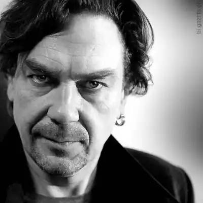
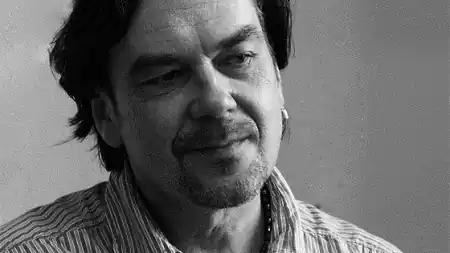
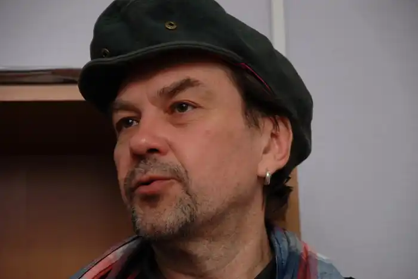

Юрій Андрухович народився 13 березня 1960 року у Станіславі (нині Івано-Франківськ). Закінчив редакторське відділення Українського поліграфічного Інституту у Львові (1982) та Вищі літературні курси при Літературному Інституті ім. О. М. Горького в Москві (1991) Працював газетярем, служив у війську, деякий час очолював відділ поезії Івано-Франківського часопису "Перевал" (1991—1995). Співредактор часопису текстів і візій "Четвер" (1991—1996). Віце-президент АУП (1997—1999). У 1994 році захистив кандидатську дисертацію по творчості забороненого в радянські роки класика української поезії першої половини XX століття Богдана-Ігоря Антонича. Докторську пише по творчості американських поетів-бітників.
У юності Юрій був лідером відомої літературної групи Бу-Ба-Бу ("Бурлеск-Балаган-Буфонада"), яка об'єднала авторів з Києва, Львова, Станіслава. Один із засновників постмодерністської течії в українській літературі, яку умовно називають "станіславським феноменом". Представники цього напрямку активно розробляють поетику "карнавального" листа. На початку 90-х років разом з Ю. Іздриком починає видавати перший в Україні постмодерністський журнал "Четвер". У 1985 році за результатами публікації двох книг віршів прийнятий у СП України, у 1991 році — за ідейним переконанням виходить зі складу Союзу письменників разом з декількома колегами і стає ініціатором установи Асоціації українських письменників. Наприкінці 80-х відомий як активний діяч первісного, ліберально-демократичного Руху. З 1991 року публікується у великих літературних журналах України. У 1994 році захистив кандидатську дисертацію по творчості забороненого в радянські роки класика української поезії першої половини ХХ століття Богдана-Ігоря Антонича. Докторську пише по творчості американських поетів-бітників. Певний час був радником мера Івано-Франківська з питань культури. У 1997 році на Україні окремими виданнями вийшли чотири книги Андруховича: "Екзотичні птахи і рослини" (вірші), книга прози (романи "Рекреації" і "Московіада"), роман "Перверзія", який заслужив репутацію культового літературного твору, книга есе "Дезорієнтація на місцевості". Критики називають Андруховича "священною коровою нової української словесності". Кілька років вів рубрику "Парк культури" у загальнонаціональній щоденній газеті "День" (Київ). Редактор і укладач Хрестоматійного додатку "Малої української енциклопедії актуальної літератури" (МУЕАЛ). Автор п’ятого перекладу українською мовою шекспірівського "Гамлета" (журнал "Четвер" № 10,2000р.). Естетичні погляди "станіславської" літературної школи, лідером якої є Андрухович, відбиті на сторінках культурологічного журналу "Плерома" (заснована в 1996 р. Володимиром Ешкілевим). Західна критика визначає Андруховича як одного із найяскравіших представників постмодернізму, порівнюючи за значимістю у світовій літературній ієрархії з Умберто Еко. Його твори перекладені 8 європейськими мовами, у тому числі роман "Перверзія" опублікований у Німеччині, Італії, Польщі. Книга есе видана в Австрії. У російському перекладі видана — невелика збірка віршів (пров. А. Макарова-Кроткова та І. Кручика, "Дружба народів", поч. 90-х); роман "Рекреації" (пров. Ю. Ільїн-Король, "Дружба народів", № 5-2000). Головний редактор літературного альманаху сучасної польської прози "Потяг 76".Автор збірок поезій: "Небо і площі" (1985р.), "Середмістя" (1989р.), "Екзотичні птахи і рослини" (1991р.), "Пісні для Мертвого півня" (2004р.), романів: "Рекреації" (1992р.), "Московіада" (1993р.), "Перверзія" (1996р.), "Дванадцять обручів" (2003р.), книг есе: "Дезорієнтація на місцевості" (1999р.), "Диявол ховається в сирі" (2006р.), У 2007 р. вийшла книга "Таємниця". Автор перекладів українською мовою п’єси "Гамлет" Вільяма Шекспіра й американських поетів-бітників "День смерті пані День" (2006р.). Лауреат літературної премії Благовіст (1993р.), премії Рея Лапіки (1996р.), Міжнародної премії ім. Гердера (2001р.), одержав спеціальну премію в рамках нагородження Премією Світу ім. Еріха-Марії Ремарка від німецького міста Оснабрюк (2005р.), "За європейське взаєморозуміння" (Лейпціг, 2006р.). Родина: Батько Ігор Мар’янович (1930-1997р.); мати Ганна Степанівна (1940р.); дружина Ніна Миколаївна (1959р.); дочка Софія (1982р.) і син Тарас (1986р.). Володіє польською, німецькою мовами. Захоплення: фонотека. Присутність Андруховича в Івано-Франківську стала вагомим чинником ферментації т. зв. "станіславського феномену" та формування місцевої мистецької еліти. Творчість Андруховича має значний вплив на перебіг сьогоднішнього літературного процесу в Україні, з його іменем пов'язані перші факти неупередженого зацікавлення сучасною українською літературою на Заході. Твори Андруховича перекладені польською, англійською, німецькою, російською, угорською, фінською, шведською, чеською мовами й есперанто. Письменник активно займається і громадською діяльністю. Має яскраво виражену громадянську позицію, підтримуючи європейську інтеграцію України. 10 березня 2008 року дочка Софія (письменниця, перекладачка та публіцистка), чоловік якої — відомий український поет Андрій Бондар, народила дівчинку, яку назвали Варварою.
Творчий доробок Юрія Андруховича формально можна поділити на два головні річища: поетичне й прозове. Його поетичний дебют відбувся в першій половині 80-х років і завершився виходом у світ збірки "Небо і площі" (1985), загалом прихильно зустрінутої критикою. Того ж таки року Юрій Андрухович разом із Віктором Небораком та Олександром Ірванцем заснував поетичну групу Бу-Ба-Бу (скорочення від "бурлеск — балаган — буфонада"), значення якої для кожного з трьох її учасників з роками змінювалося — від чогось на кшталт "внутрішнього таємного ордена" до "прикладної квазіфілософії життя". Проте друга поетична збірка Юрія Андруховича ("Середмістя", 1989) носить швидше не "бубабуістський", а "елегійно-класицистичний" характер. Вповні "балаганно-ярмарковою" можна вважати натомість третю збірку — "Екзотичні птахи і рослини" (1991), яка волею автора мала б носити підзаголовок "Колекція потвор". Поетичне річище Юрія Андруховича вичерпується десь наприкінці 1990 року і завершується друкованими поза збірками циклами "Листи в Україну" (Четвер, № 4) та "Індія" (Сучасність, 1994, № 5). Домінантою поетичної картини Юрія Андруховича в усі періоди його творчості видається напружене шукання "духовної вертикалі буття", суттєво занижене тенденцією до примирення "вертикального з горизонтальним". Звідси — стале поєднання патетики з іронією, нахил до стилізаторства і заміна "ліричного героя" щоразу новою "маскою". Західна критика визначає Андруховича як одного із найяскравіших представників постмодернізму, порівнюючи за значимістю у світовій літературній ієрархії з Умберто Еко. Його твори перекладені вісьмома європейськими мовами, у тому числі роман "Перверзія" опублікований у Німеччині, Італії, Польщі. Книга есе видана в Австрії. З прозових творів Юрія Андруховича найперше був опублікований цикл оповідань "Зліва, де серце" (Прапор, 1989, № ??) — майже фактографія служби автора у війську, своєрідна "захалявна книжечка", що поставала під час чергувань у вартівні. У 1991 році з'являється друком параісторичне оповідання "Самійло з Немирова, прекрасний розбишака" (Перевал, № 1), що ніби заповідає характерні для подальшої прози Андруховича риси: схильність до гри з текстом і з читачем, містифікаторство (зрештою, достатньо прозоре), колажність, еротизм, любов до маґічного і надзвичайного. Романи "Рекреації" (1992), "Московіада" (1993) та "Перверзія" (1996) при бажанні можна розглядати як трилогію: героєм (антигероєм) кожного з них є поет-богема, що опиняється в самому епіцентрі фатальних перетворень "фізики в метафізику" і навпаки. Усі романи — доволі відчутна жанрово-стилістична суміш (сповідь, "чорний реалізм", трилер, ґотика, сатира), час розвитку дії в них вельми обмежений і сконденсований: одна ніч у "Рекреаціях", один день у "Московіаді", п’ять днів і ночей у "Перверзії". Есеїстика Юрія Андруховича виникає внаслідок його частих подорожей до інших країн і поступово складається в майбутню "книгу спостережень" над нинішніми особливостями європейського культурно-історичного ландшафту. Разом із польським письменником Анджеєм Стасюком видав книгу "Моя Європа: Два есеї про найдивнішу частину світу" (польське видання — 2000, українське — 2001, німецьке — 2003) — текст Андруховича, написаний до цієї книжки, носить назву "Центрально-східна ревізія" і являє собою спробу гранично відвертого осмислення свого власного "часу і місця". Твори автора перекладено і видано у Польщі, Німеччині, Канаді, Угорщині, Фінляндії (окремими книжками), США, Швеції, Іспанії, Росії‚ Австрії (окремими публікаціями). Поезія Андруховича займає чільне місце у творчості легендарних українських рок-груп "Плач Єремії" та "Мертвий півень". Андрухович є автором перекладів з англійської (зокрема, він є автором п’ятого українського перекладу шекспірівського "Гамлета" а також книжки перекладів американських поетів-бітників), польської (Т. Конвіцький), німецької (Райнер Марія Рільке, Ф. Ролер, Фріц фон Герцмановскі-Орландо) та російської (Борис Пастернак, Осип Мандельштам, Анатолій Кім).